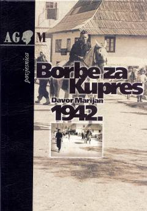

BZ1942-yilda Kupres hududida bo'lib o'tgan harbiy janglar haqidagi tarixiy tadqiqot.
Kitob 1942-yil yozida Kupres hududida bo'lib o'tgan harbiy harakatlar va proletar brigadalarining yurishini batafsil tahlil qiladi. Muallif Davor Marijan ushbu tarixiy voqealarni arxiv hujjatlari va harbiy manbalar asosida yoritib beradi.